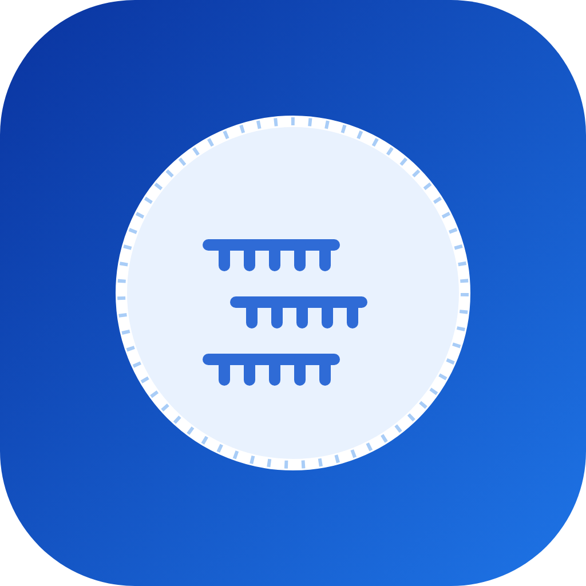
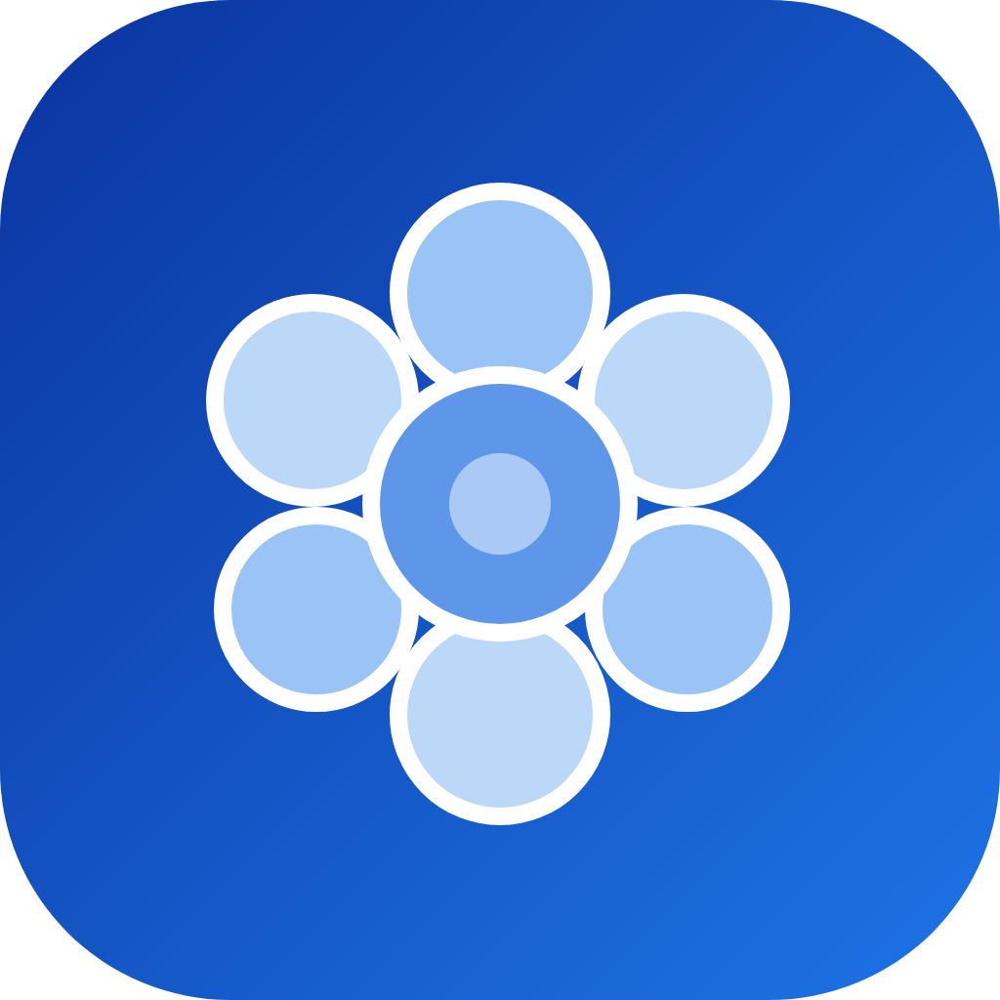

Regenerative Immune Therapeutics
We develop cell-based immunotherapies for chronic autoimmune and inflammatory diseases including psoriasis, atherosclerosis, and inflammatory bowel disease.
We differentiate induced pluripotent stem cells (iPSCs) into therapeutic immune cells — including iPSC-derived macrophages and helper T cells — and apply genetic engineering to endow them with enhanced regenerative potential. These engineered cells are validated in human disease models such as atherosclerosis-like vascular organoids.


Extracellular Vesicle Engineering
We engineer extracellular vesicles (EVs) as next-generation gene and RNA delivery vehicles for inflammatory bowel disease (IBD) and cancer.
By surface- and cargo-engineering EVs to evade immune clearance, we improve their delivery efficiency to target tissues, carrying therapeutic molecules such as miRNA. Bioinformatics guides the identification of disease-relevant genetic targets and regulatory pathways.



Organoid Engineering
We build skin, vascular, and cardiac organoids to model tissue-specific biology and disease.
Applications span skin aging, vascular development and dysfunction, and cardiac tissue modeling. As New Approach Methodologies (NAMs), our organoids also serve as human-relevant platforms for drug testing — for example, cardiac organoids for drug cardiotoxicity evaluation — offering alternatives to animal testing.


Anti-Aging & Cellular Rejuvenation
We engineer stimulus-releasing biomaterials that model — and reverse — the human aging cycle at the cellular level.
Our senescence-delaying culture platforms sustain controlled hydrogen peroxide and nitric oxide release for days, lowering senescence markers and DNA damage in human adipose-derived stem cells to uncover anti-aging and age-reversal factors — advancing toward scalable manufacturing.


Interested in joining?
We welcome motivated students and researchers who want to build the future of regenerative medicine.
Get in touch →